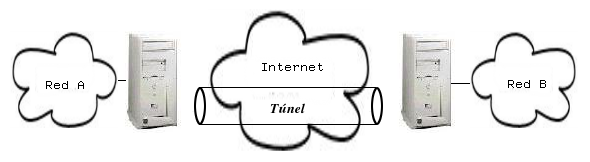
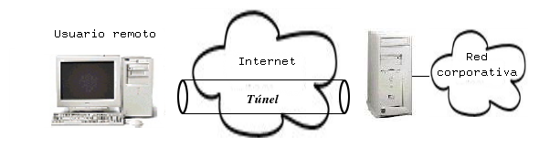
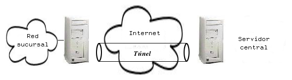

El término Red Privada Virtual, frecuentemente referido por VPN 1.3, designa conceptos muy diferentes dependiendo del interlocutor que lo utilice. Por lo general, se asume un significado común y mínimo que lo designa como una extensión de una red local o privada a través de una red mayor y pública, como bien puede ser Internet. El objetivo básico, por tanto, consiste en proporcionar conectividad completa entre dos redes privadas diferentes y separadas, a través de una tercera, de modo que el usuario de cualquiera de estas redes realmente no pueda apreciar separación alguna. Paradójicamente, y como veremos más adelante, es posible utilizar redes privadas virtuales precisamente para todo lo contrario, separar una misma red en partes diferentes e independientes entre sí.
Por lo general cuando hablamos de redes privadas virtuales nos referimos a su implementación concreta más popular, unir redes locales a través de Internet de una forma segura. En los últimos años ésta se ha convertido sin duda en la aplicación más utilizada de este tipo de redes, debido a la rápida expansión y abaratamiento de las comunicaciones a través de una red global, Internet. Nótese que introducimos el concepto de seguridad del que no habíamos hablado en absoluto anteriormente, y que no está necesariamente ligado a las redes privadas virtuales.
|

|
Podemos distinguir varios tipos de redes privadas virtuales atendiendo a la forma de implementarlas:
|

|
|

|
|
|
Existen dos formas típicas de implementar una red privada virtual, basadas en hardware y en software respectivamente. En el fondo ambas soluciones implementan los mismos protocolos y soluciones típicas para construir redes privadas virtuales, aunque en distintos niveles. Lógicamente, una solución hardware ofrecerá un rendimiento mayor y permitirá construir sistemas complejos y grandes de forma sencilla. Como contrapartida, las soluciones software permitirán menor rendimiento, pero un aumento en la flexibilidad de configuración.
La mayoría de estos productos se centran en el actual estándar de facto para redes privadas virtuales, IPSec1.4 , aunque cada vez aparecen más soluciones basadas en otros protocolos de distinto nivel, como PPTP1.5, L2TP 1.6o el cada vez más popular SSL/TLS1.7. Todos estos sistemas establecen túneles entre dos puntos de una red (los que son, estrictamente, los extremos de la red privada virtual) a través de los cuales se encapsula el tráfico intercambiado entre las dos redes a unir.
Estos últimos conceptos son la base teórica en la que se sustentan las redes privadas virtuales. El enlace se establece entre dos equipos que tienen acceso directo tanto a las subredes que se pretenden comunicar, como a la red que servirá de apoyo para la red privada virtual, como ya se ha dicho, generalmente Internet. Se establece una comunicación entre estos dos equipos, de forma que todo el tráfico que se dirige desde una de las subredes a la otra a través de la VPN es enviado desde el terminador de la primera al equipo terminador de la segunda.
Cuando un paquete cualquiera atraviesa la red privada virtual, el terminador saliente encapsula dicho paquete dentro de otro construido especialmente, correspondiente a alguno de los protocolos mencionados anteriormente, por norma general IPSec. El destino de ese paquete no será el destino original del paquete encapsulado, sino el terminador de la subred de destino. Una vez el paquete llega a través de la red pública al otro extremo de la VPN, el terminador correspondiente recoge dicho paquete y extrae su contenido intacto, redirigiéndolo tal cual a la red local de su extremo. Este es el concepto de túnel anteriormente mencionado, tráfico que se encapsula como carga útil de un protocolo utilizado para establecer la red privada virtual entre los dos terminadores del túnel, extremos de la VPN.
|
|
Pese a que como se ha dicho, la funcionalidad principal que se espera de una red privada virtual es dar acceso a una red local desde puntos separados en el espacio, sin necesidad de realizar un gran desembolso en infraestructuras, se suele considerar también básico que la solución alternativa proporcione varios niveles de seguridad. En este sentido entendemos por seguridad dos aspectos fundamentales, la privacidad e integridad de las comunicaciones, y la autenticación de los usuarios y equipos que utilizan la red.
Dada la alta frecuencia con la que se utiliza Internet como medio sobre el que sustentar una VPN, es necesario establecer mecanismos adicionales que aseguren que el tráfico generado se mantiene fuera de los ojos de usuarios no autorizados. Al utilizar una red pública es imposible controlar qué uso se hace de las infraestructuras y quién tiene acceso a ellas. De hecho, ni siquiera es posible controlar cuáles son las infraestructuras que se utilizarán, que pueden variar a lo largo del tiempo. En estas condiciones es necesario recurrir a sofisticados esquemas criptográficos que aseguren la privacidad de las comunicaciones.
Más aún, resulta de interés garantizar que el tráfico no resulta alterado de su paso por la red pública de comunicaciones. Al igual que alguien podría monitorizar la red y obtener información sensible correspondiente al tráfico generado por la VPN, el que ese tráfico viaje cifrado no asegura que esa misma persona no pudiese modificarlo de alguna forma. De modo que no sólo nos interesa cifrar los datos transmitidos, sino también buscar algún mecanismo que nos asegure que llegan a su destino tal cual salieron del origen.
Por otro lado, se hace patente la necesidad de identificar a los usuarios de la red y comprobar que su identidad sea correcta y adecuada para acceder a los recursos proporcionados. La aproximación típica que se utiliza para solventar este problema trabaja a dos niveles, autenticando por un lado el equipo informático desde el que se utiliza el servicio, y por otro lado al usuario que se encuentra detrás del mismo. Si alguno de estos dos elementos falla no podremos garantizar que alguien no autorizado acceda a los recursos, y por tanto la privacidad e integridad de las comunicaciones subyacentes no tienen sentido.